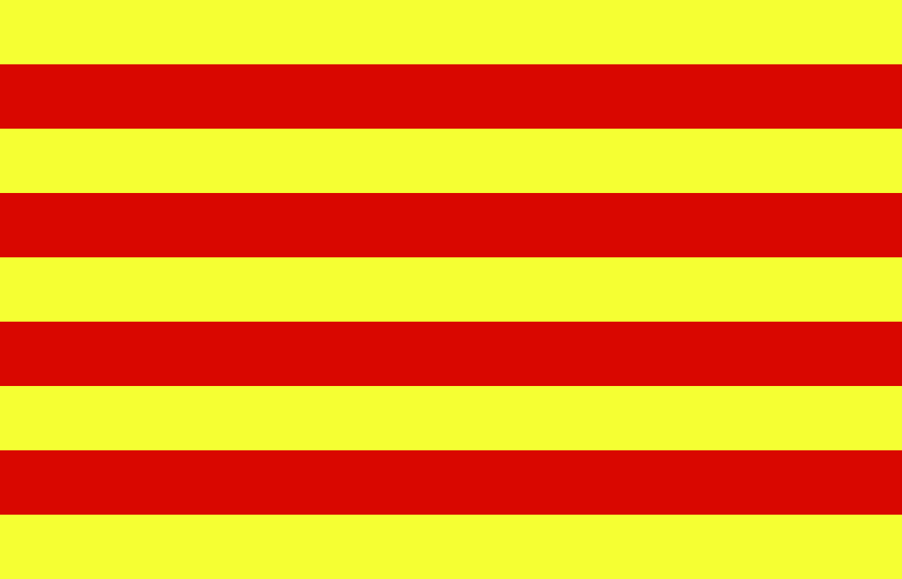

Sobre Catalunya
Explicació
Catalunya és una comunitat autònoma situada al nord-est de la península Ibèrica, a Espanya. Està composta per quatre províncies: Barcelona, Girona, Lleida i Tarragona. La seva capital és Barcelona, una ciutat coneguda per la seva arquitectura modernista, amb obres famoses com la Sagrada Família d'Antoni Gaudí.
Catalunya té una cultura i una llengua pròpies, el català, que és cooficial juntament amb el castellà. Aquesta regió té una llarga història i tradicions que es remunten a l'edat mitjana, i ha estat un important centre de comerç i cultura al llarg dels segles.
La gastronomia catalana també és molt rica i variada, amb plats típics com la escalivada, els calçots amb salsa romesco, i les postres com la crema catalana. A més, Catalunya és coneguda pels seus festivals tradicionals, com la Diada de Sant Jordi, la festa major de la Mercè i els castells (torres humanes).
L'economia catalana és una de les més potents d'Espanya, amb sectors destacats com el turisme, la indústria manufacturera i la tecnologia.
Col·lecció d'enllaços
Disclaimer
Hem utilitzat Google Translate per crear aquesta pàgina.
En obrir OTONEKO.CAT, vaig explicar aquesta pàgina en català.
Això compleix els requisits per adquirir un domini .CAT i es pot utilitzar per a la vostra pàgina d'inici.